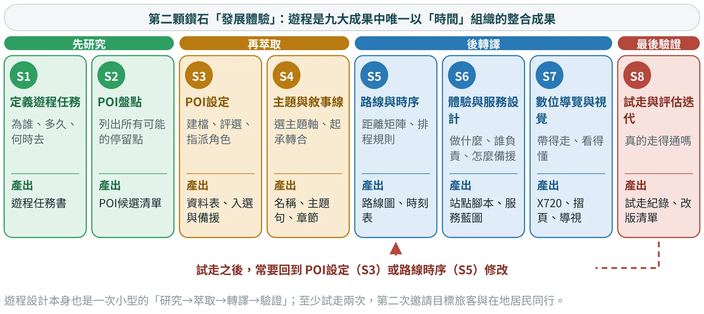
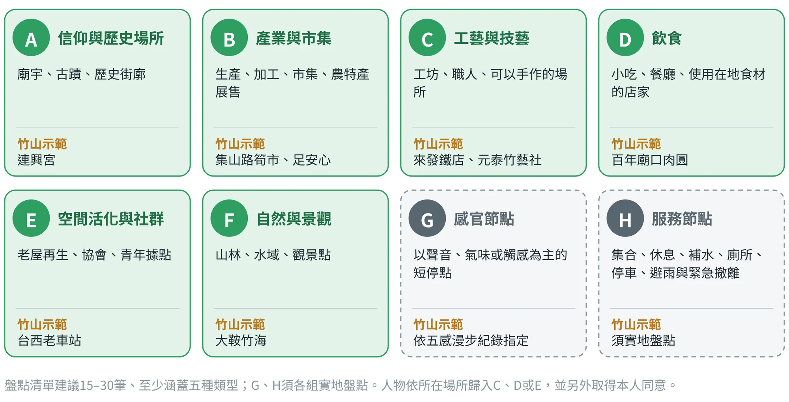
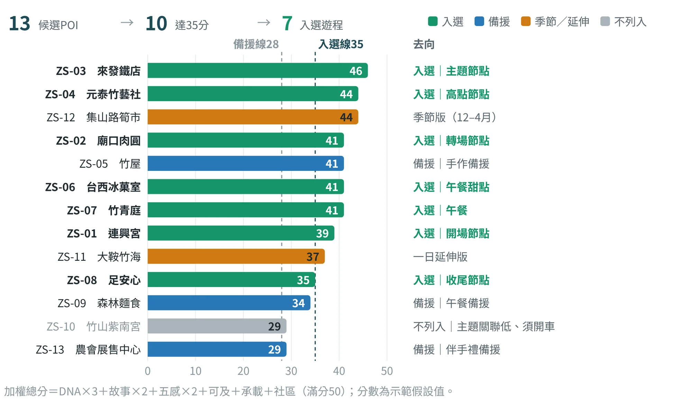
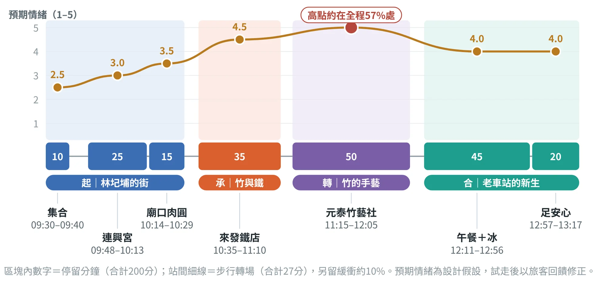
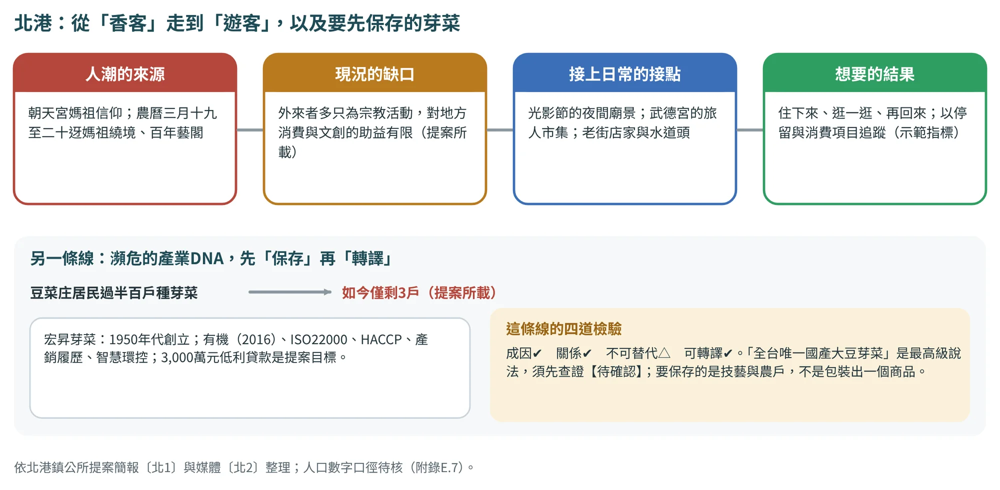
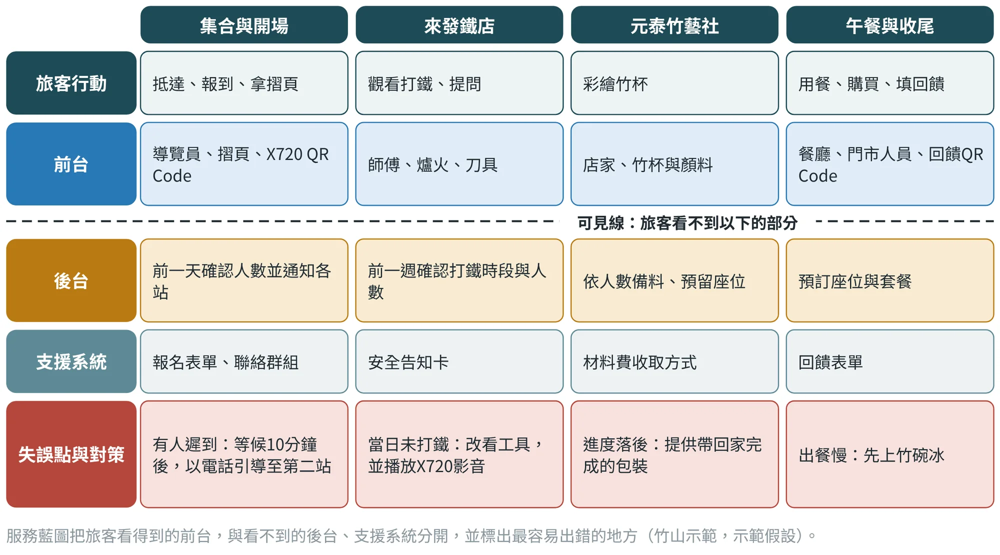
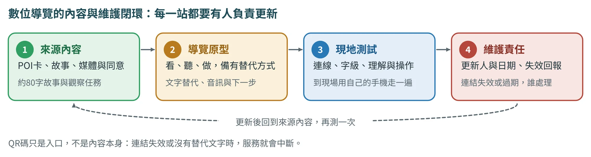
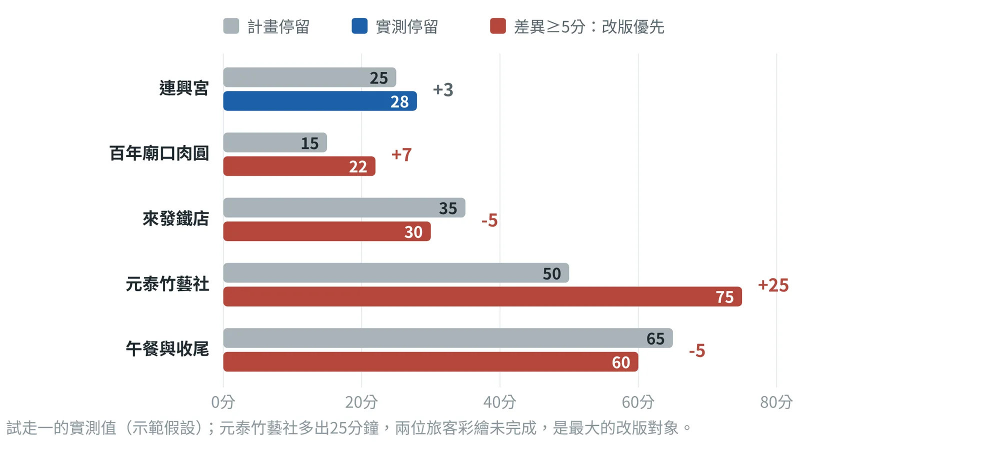
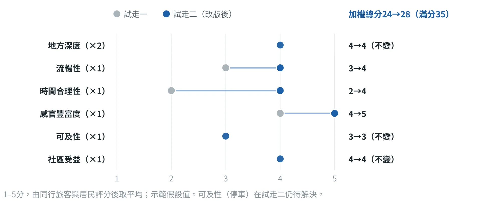

地方深度體驗遊程設計
把停留點排成一段可以走、可以感受、可以帶走的經驗
11.1遊程是以「時間」組織的成果#
深度體驗遊程是九大成果中唯一以「時間」組織的成果。它把前八項成果排成一段可以走、可以感受，也可以帶走的經驗；上游成果愈扎實，遊程愈有深度（表11.1）。
| 既有成果 | 在遊程中的用途 |
|---|---|
| 成果1 地方DNA | 決定主題軸與POI的選點理由；每個入選POI都必須對應至少一項核心DNA |
| 成果2 五感體驗 | 提供各站的感官活動與替代參與方式，也是安排情緒高低點的依據 |
| 成果3 文化語彙 | 形成遊程名稱、地方故事、提問與對話，優先採用居民的原生用語 |
| 成果4 設計語彙 | 轉成任務動詞與體驗節奏，以及導覽摺頁、導視與任務道具的造型規則 |
| 成果5 脈絡分析圖 | 串聯人、地、產業與歷史；高潛力轉譯點是POI的優先候選，人物與組織節點是服務責任者的來源 |
| 成果6 地方色彩 | 路線圖、任務卡、導視與X720介面的色彩，並區分資訊層級 |
| 成果7 地方圖紋 | 導覽摺頁、識別與伴手禮包裝的底紋；只使用已通過四邊接合檢查的樣式圖 |
| 成果8 地方特色商品 | 安排在收尾站，讓旅客理解材料、製程與使用情境，並把體驗帶回家 |
遊程的品質用六項指標評估：地方深度、流暢性、時間合理性、感官豐富度、可及性、社區受益。這六項既是設計時的檢查清單，也是試走後的評分表（11.9節）。
POI（Point of Interest，興趣點）在遊程裡是節點：它有位置、有地方意義與故事，也提供體驗任務與服務條件。POI不只是景點，一座廟、一間店、一位師傅、一個季節市集、一段聽得到聲音的巷子，甚至一間廁所，只要遊程需要它，都是POI。集合、休息、補水與緊急撤離等點，則另設為「服務節點」。
11.2八個步驟：從任務書到試走#
遊程設計沿用雙鑽石思維，位在第二顆鑽石「發展體驗」，是九大成果的整合〔文1〕。圖11.1顯示，S1–S2蒐集與盤點，S3–S4篩選與定調，S5–S7把POI轉成路線、服務與導覽，S8以試走驗證。第三步「POI設定」決定遊程的骨架，是本章的重點；試走之後，常要回到POI設定或路線時序修改，這是方法的一部分。

本章以竹山鎮市街半日遊程為示範。竹山舊稱林圮埔，地名源自明鄭時期率眾入墾的林圮，舊市街呈「三橫四豎」的街廓〔竹5〕；報導指出，竹山曾有一千多家竹工廠，後因塑膠工業崛起而沒落，921地震後竹加工幾乎消失，近年老車站與老店由返鄉青年與在地團隊重新活化〔竹1〕〔竹3〕。
11.3S1 定義遊程任務#
遊程任務書回答：為誰設計、玩多久、什麼時候去、有哪些限制。每一項都要說得出它如何影響POI的選擇或排程，例如任務書訂為「全程步行」，山區須開車的POI就會被排除（表11.2）。Persona依旅客訪談與觀察建立，資料不足的欄位標「待補」，不以想像代替。
| 項目 | 示範設定 |
|---|---|
| 場域 | 南投縣竹山鎮市街：連興宮一帶的舊街廓與台西老車站周邊 |
| 主題假設 | 一根竹子如何養活一座小鎮：從竹產業的工具、手藝，走到老車站的新生 |
| 核心DNA | D1竹產業與竹工藝（主題軸）；D2林圮埔市街與信仰、D3老空間活化與返鄉青年（副線） |
| 目標旅客 | 30–45歲、喜歡手作與老街散步的朋友或親子小團體，4–10人，自行開車抵達 |
| 時長與時段 | 半日，約4小時（09:30–13:40），含午餐 |
| 季節與交通 | 全年可行；12月至隔年4月可加入集山路筍市（季節版）；集合後全程步行，延伸版需開車 |
| 限制 | 宗教場所遵守參拜禮儀；工坊與店家須事先預約，並確認接待人數 |
11.4S2–S3 POI：盤點、設定與評選#
盤點：POI不只是景點
盤點有四個來源並進：文獻與報導、田野踏查（沿街記錄）、居民與業者訪談（例如問「外地朋友來，你會帶他去哪裡？」）、脈絡分析圖中的高潛力轉譯點與人物、組織節點。盤點數量要比最後入選的多兩到三倍，才有選擇的空間；建議15–30筆，八種類型（圖11.2）至少涵蓋五種，每一筆都有可查證的來源。

每個POI要能回答四個問題：①這裡代表什麼地方DNA？②旅客在這裡做什麼？③誰能支持這段體驗？④如何證明旅客有學到或感受到？前三個問題對應資料表的欄位，第四個問題對應試走紀錄。
建檔：七組欄位的POI資料表
每個POI建一筆資料，欄位分七組（表11.3）。這份資料表同時是排程、X720建置與試走評估的共同依據。其中「營運」「可及性與安全」「媒體與權利」三組，只能填實際確認過的資料，其餘一律填「待確認」。與成果8共用的POI只要補上遊程專用欄位，編號相同、不重複建檔。
| 欄位群組 | 欄位 | 填寫說明 |
|---|---|---|
| 識別 | POI編號、名稱、類型代碼、地址、座標 | 編號採「場域代碼－流水號」（例如ZS-03）；座標以Google My Maps標點 |
| 地方意義 | 對應DNA、相關文化語彙、故事摘要、資料來源 | 故事摘要80字內；來源寫到文獻、訪談或照片編號 |
| 體驗 | 五感重點、可參與活動、建議停留時間、最佳時段 | 停留時間以分鐘計，試走後以實測值更新 |
| 營運 | 開放時間、費用、預約方式與人數上限、服務責任者 | 只填向業者確認過的資料 |
| 可及性與安全 | 交通與停車、步行難度與無障礙、風險、備援 | 風險寫具體情境，例如高溫、刀具、車流 |
| 媒體與權利 | 可用素材、授權與同意狀況 | 人物肖像與錄音須取得書面同意 |
| 狀態 | 確認狀態、確認日期、確認人 | 每次確認都留下日期與確認人 |
評選：門檻、加權評分、覆蓋檢查
第一關是門檻，三項全部通過才進入評分：可公開造訪或場主有意願接待、動線與環境安全無虞、至少有一個可查證的資料來源。第二關是加權評分：六項準則依序為DNA關聯度×3、故事深度×2、五感與參與×2、可及性與安全×1、承載與營運穩定×1、社區受益×1，每項1–5分，滿分50；35分以上建議入選，28–34分列為備援或季節限定。評分由小組依田野資料討論後給分並寫下理由，AI可以協助整理與計算，但不代為評分。第三關是覆蓋檢查：入選POI合起來要涵蓋主題軸與副線的所有DNA、至少三種感官、至少一個飲食點與一個可坐下休息的點，相鄰兩站的主要體驗方式（看、聽、吃、做、買）不重複。
圖11.3是竹山示範的評選結果：13個候選POI全部通過門檻，其中10個達35分，但只有7個入選。分數高不代表一定入選：大鞍竹海（37分）與DNA關聯度最高，但任務書訂為「全程步行」、山區須開車，改列一日延伸版；集山路筍市（44分）只在12月至隔年4月開市，列為季節版；竹屋（41分）與元泰竹藝社同為手作，兩站擇一，改作備援；紫南宮（29分）知名度高，但與「竹」的主題軸關聯低，且須開車，不列入本遊程。

第三關的覆蓋檢查結果見表11.4。入選POI各自承擔不同的路線角色（表11.5）：每一章至少一個主題節點，高點放在全程的中後段，約每90分鐘安排一次可以坐下的停留，每個須預約或受天候影響的站都要有備援節點。高點與結尾的安排參考「峰終定律」：旅客對一段體驗的記憶，主要取決於最強烈的時刻與結束時的感受。
| 檢查項目 | 入選POI的情形 | 結果 |
|---|---|---|
| DNA覆蓋 | D1：ZS-02、03、04、06、07、08；D2：ZS-01、02、03；D3：ZS-04、06、07、08 | 通過 |
| 感官種類 | 視與聽（廟埕、打鐵聲）、味（肉圓、午餐、竹碗冰）、觸（竹杯彩繪、刀具）、嗅（廟埕香火） | 通過 |
| 飲食與休息 | 飲食：ZS-02、06、07；可坐下：肉圓、手作、午餐 | 通過 |
| 相鄰體驗方式 | 聽→看→吃→聽→做→吃→買，相鄰不重複 | 通過 |
| 角色 | 作用 | 安排原則 |
|---|---|---|
| 集合／起點 | 建立第一印象，說明遊程 | 容易找、可停車或鄰近大眾運輸、有廁所 |
| 開場節點 | 交代地方背景 | 放在前30分鐘，以「看得到」的歷史場景開場 |
| 主題節點 | 承載核心體驗 | 每章至少一個，停留30–60分鐘 |
| 轉場節點 | 讓移動本身也是體驗 | 5–15分鐘短停，適合感官節點與小吃 |
| 高點節點 | 情緒最高的一站 | 放在全程的中後段（約55–70%處） |
| 休憩補給 | 恢復體力 | 約每90分鐘安排一次可以坐下的停留 |
| 收尾節點 | 回顧與帶走 | 安排伴手禮、回饋問卷與合照 |
| 備援節點 | 雨天或臨時關閉時替代 | 每個須預約或受天候影響的站都要有 |
入選的POI各做一張完整的設定卡。以來發鐵店（ZS-03）為例：對應DNA為D1（主）與D2（副）；五感重點是聽打鐵聲、看爐火與鍛打、在師傅指導下感受刀具重量；建議停留35分鐘；風險是高溫、火星與刀具，因此旅客與爐火保持距離、兒童由大人陪同；備援是當日未打鐵時改看工具陳列並以X720播放打鐵影音；師傅的肖像與錄音須取得書面同意。報導提到可體驗打鐵，現況與安全條件、營運資料與座標都待確認〔竹3〕。
11.5S4 主題與敘事線：起承轉合#
遊程要說一個故事，不是介紹一串景點。做法是從核心DNA中選1項作主題軸、1–2項作副線，不要把五類DNA全部塞進一條遊程；遊程與章節名稱優先採用成果3中經居民檢核的文化語彙；敘事弧建議採「起、承、轉、合」四章，每章1–3個POI（表11.6）。每個入選POI都要屬於某一章，而且說得出它在故事中的作用。
示範暫名：「從割筍刀到竹碗冰：竹山市街半日行」；主題句：一根竹子曾經養活整個林圮埔，跟著竹子走一圈市街，看它從工具、手藝，走到老車站的新生活示範假設。正式名稱應取自本組成果3中經居民檢核的文化語彙。
| 章節 | DNA | POI | 這一章要讓旅客知道的事 |
|---|---|---|---|
| 起｜林圮埔的街 | D2 | 台西老車站集合、連興宮、百年廟口肉圓 | 市街的格局與信仰；一口有筍絲的肉圓，帶出竹與日常飲食的關係 |
| 承｜竹與鐵 | D1 | 來發鐵店 | 竹產業需要的工具；聽見還留在街上的打鐵聲 |
| 轉｜竹的手藝 | D1、D3 | 元泰竹藝社 | 竹製品如何在塑膠時代後重新回到生活；親手彩繪一個竹杯 |
| 合｜老車站的新生 | D3 | 竹青庭、台西冰菓室、足安心 | 這座客運站曾送鄉親離鄉〔竹1〕，如今是吃飯、吃冰、帶走農產的地方 |
11.6S5 路線與時序：走得順的時刻表#
排程從時間距離矩陣開始：列與欄都是候選POI，格內填步行或車行分鐘數。先以Google My Maps或QGIS估算，再實際走一次，取較長的時間（表11.7）。
| 步行分鐘 | 台西老車站 | 連興宮／肉圓 | 來發鐵店 | 元泰竹藝社 | 竹屋（備援） |
|---|---|---|---|---|---|
| 台西老車站 | — | 8 | 7 | 6 | 2 |
| 連興宮／肉圓 | 8 | — | 6 | 7 | 9 |
| 來發鐵店 | 7 | 6 | — | 5 | 8 |
| 元泰竹藝社 | 6 | 7 | 5 | — | 5 |
| 竹屋（備援） | 2 | 9 | 8 | 5 | — |
連興宮與廟口肉圓位在同一處（轉場1分鐘）；竹青庭、台西冰菓室與足安心同在台西老車站內，排程時視為同一地點。
排程依六條規則：
- 總時長＝停留時間合計＋轉場時間合計＋緩衝（約10–15%）。
- 先排固定的：有固定開放時間或須預約的站先排，彈性站後排。
- 轉場不超過15分鐘：步行遊程的單次轉場不超過15分鐘；全程步行距離依Persona的體力訂定上限，寫進任務書。
- 約每90分鐘坐一次：安排可以坐下的停留（用餐、喝茶或坐著手作）。
- 體驗方式不重複：相鄰兩站的主要體驗方式不重複；高強度的體驗之後接輕鬆的站。
- 峰在中後段、終在可帶走：最強烈的體驗放在中後段，結尾安排可以帶走的東西。
竹山示範的結果見表11.8與圖11.4：停留合計200分鐘、轉場合計27分鐘，共227分鐘（09:30–13:17），另留緩衝23分鐘（約10%），13:40解散。高點在元泰竹藝社，位於全程約57%處，落在55–70%的範圍內；結尾在足安心，旅客帶走在地農特產與回饋，也是成果8商品的陳列位置。
| 時間 | 站點 | 角色 | 五感活動與任務 |
|---|---|---|---|
| 09:30–09:40 | 台西老車站前 | 集合 | 說明遊程、發放導覽摺頁、掃描X720 QR Code |
| 09:48–10:13 | 連興宮 | 開場 | 聽廟埕人聲、聞香火；任務：在廟前找出「三橫四豎」老街的方向 |
| 10:14–10:29 | 百年廟口肉圓 | 轉場 | 吃一顆肉圓，嚐出筍絲內餡；任務：問店家筍絲從哪裡來 |
| 10:35–11:10 | 來發鐵店 | 主題 | 聽打鐵聲、看爐火；任務：向師傅問一把割筍刀的用途 |
| 11:15–12:05 | 元泰竹藝社 | 高點 | 摸竹材、彩繪一個竹杯帶走；聽返鄉青年經營竹藝的故事 |
| 12:11–12:56 | 竹青庭午餐＋台西冰菓室 | 休憩補給 | 在竹編空間用午餐，甜點是竹碗冰；任務：找出空間中的竹編 |
| 12:57–13:17 | 足安心 | 收尾 | 挑選在地農特產；填回饋問卷、合照 |

延伸版：一日版可在午後開車前往大鞍竹海（ZS-11），把竹的故事帶回竹林；12月至隔年4月的季節版，可在上午加入集山路筍市（ZS-12）。兩者的交通與時間皆待確認。
九個案例的路線：四種組織方式
11.6節的時刻表處理的是「一條已經選定的路線」怎麼走得順；九個案例則提供了組織路線的另外幾種方式（表11.9）：線型廊帶（斗南、居鑾）、主題路線組（鳥取、怡保、土庫）、以一個核心節點為中心的串聯（北港），以及用一個自然要素串起來的路徑（埔里）。其中只有斗南和北港有已實施的項目，其餘都是構想、提案或示範。斗南的廊帶與它的低碳估算，在16.4節（圖16.4）另外細看。
| 案例 | 路線的型態 | 節點與尺度 | 狀態 | 來源 |
|---|---|---|---|---|
| 斗南 | 線型廊帶 | 斗南車站→他里霧文化園區→七號倉庫群→市場，約1.2至1.5公里；節點相距約400至950公尺（作者估算，須實地量測） | 已實施（部分） | 〔斗1〕〔斗2〕 |
| 居鑾 | 線型步道 | 車站—咖啡—市場—鐵道壁畫（鐵道慢旅步道） | 構想 | 〔居1〕 |
| 怡保 | 三條主題路線＋慢旅Pass | 錫礦×工藝×歷史；石灰岩×洞穴×自然；白咖啡×美食×老城 | 構想 | 〔怡1〕 |
| 鳥取 | 三條主題路線 | 自然三重奏（砂丘—山岳—海岸）；妖怪文化深度遊；星空保護地夜旅 | 構想 | 〔鳥1〕 |
| 土庫 | 三條廊道 | 外環糖鐵、大同路、中山路，加街區產業平台 | 提案 | 〔土1〕 |
| 北港 | 以一個核心節點串聯 | 朝天宮為中心：光影節、武德宮旅人市集、老街店家、水道頭 | 已實施 | 〔北1〕 |
| 埔里 | 以一個自然要素串聯 | 「酒—紙—生態」的水路徑動線 | 示範假設 | 本書示範 |
| 鹿谷 | 體驗模組 | 茶山輕旅行與一日茶師、茶席文化館 | 提案 | 〔鹿1〕〔鹿2〕 |
| 古坑 | — | 文件只有設計稿，未見路線 | — | 〔古1〕 |
狀態標籤見表5.4；斗南的距離為作者估算，須實地量測待確認。
北港的題目是路線之前的一個問題：怎麼讓人潮「走進」日常。提案〔北1〕想解決的是「香客」如何變成「遊客」（圖11.5）。人潮來自朝天宮的媽祖信仰與每年農曆三月十九至二十的迓媽祖；缺口是外來者多只為宗教活動而來，對地方消費與文創的助益有限（提案所載）；接點是光影節的夜間廟景、武德宮的旅人市集、老街店家與水道頭；想要的結果是「住下來、逛一逛、再回來」，可以用停留與消費項目追蹤（示範指標）。

11.7S6 體驗與服務設計：做什麼、誰負責、出狀況怎麼辦#
每一站都要寫清楚六項：DNA主題、五感活動、時間、轉場、服務責任者、備援方案。每站再設計一個「任務」，讓旅客動手、提問或交換，而不只是看，例如請旅客向打鐵師傅問一把割筍刀的用途。涉及人物的任務，要先取得當事人同意。
Journey Map從旅客的角度，逐段檢查行動、接觸點、情緒、痛點與機會（表11.10）。預期情緒是1–5分的設計假設，試走後以旅客的實際回饋修正。表中最低點在集合階段（2.5分），因此「開場就說故事」成為改善機會；最高點在彩繪竹杯（5.0分），而痛點正是「手作超時」，這件事在試走中果然發生。
| 階段 | 旅客行動與接觸點 | 情緒 | 痛點 | 機會 |
|---|---|---|---|---|
| 行前 | 報名、看X720預覽（報名表單、行前通知） | — | 不知道怎麼停車 | 行前附停車建議 |
| 集合 | 找停車、報到（導覽員、摺頁） | 2.5 | 等候遲到者 | 開場就說故事 |
| 起 | 逛廟埕、吃肉圓（廟、小吃店） | 3.0–3.5 | 肉圓店座位少 | 分食、外帶 |
| 承 | 看打鐵、提問（師傅、爐火） | 4.5 | 高溫與安全 | 安全告知卡 |
| 轉 | 彩繪竹杯（店家、竹材） | 5.0 | 手作超時 | 預先打底的竹杯 |
| 合 | 午餐、吃冰、買農產（餐廳、門市） | 4.0 | 出餐等待 | 先上竹碗冰 |
| 回家後 | 分享照片、使用竹杯（社群、X720） | — | — | 竹杯成為紀念品 |
服務藍圖把旅客看得到的前台，與看不到的後台、支援系統分開，並標出最容易出錯的地方（圖11.6）。每位服務責任者都要先同意參與，每個失誤點都要有備援：有人遲到，等候10分鐘後以電話引導至第二站；當日未打鐵，改看工具並播放X720影音；進度落後，提供帶回家完成的包裝；出餐慢，先上竹碗冰。服務藍圖的基本概念與用法，可參考Nielsen Norman Group的說明〔文12〕。

一段手作體驗的服務藍圖
竹杯彩繪若超時，旅客感到的是「作品做不完」；後台的原因卻可能是打底工序、工具數量、指導方式或乾燥時間。藍圖的用處，是把問題從「旅客動作太慢」轉向可以改善的服務條件。表11.11把竹山的手作站拆成到場前、手作中與離場後三段，並把每一段的責任與失誤對策寫在同一張表裡。
| 層次 | 到場前 | 手作中 | 離場後 |
|---|---|---|---|
| 旅客行動 | 確認時間與需求 | 觀察、操作、提問 | 收拾、攜帶、回家完成 |
| 前台接觸 | 行前說明與報到 | 職人指導、材料與示範 | 包裝、保養卡、求助窗口 |
| 後台工作 | 備料、打底、清點工具 | 補料、分組、留意乾燥 | 確認作品狀態與未完成項目 |
| 支援系統 | 預約名單與聯絡 | 材料庫存與作業說明 | 售後內容與版本維護 |
| 失誤與對策 | 遲到：提供明確集合規則 | 超時：改分段操作與續作包 | 未乾：乾燥判斷與保護方式 |
| 責任證據 | 誰確認、何時完成 | 誰帶領、誰處理異常 | 誰提供說明、誰追蹤 |
藍圖不是把工作寫得越多越好，而是找出交接處。預約人數變更後，誰會通知工坊與餐廳？作品沒乾時，誰有權決定延後包裝？沒有明確責任的交接，最容易在真實營運中失敗。
每一項備援都要寫出啟用條件。例如雨天備援，要先確認避雨空間與接待同意；播放打鐵影音，要先取得錄製與公開使用的同意；改到另一間工坊，也要確認材料、交通與教學能力。備援只列一個名稱，並不能降低實際風險。
桌上演練：實地試走之前，先在桌上走一次
每位組員扮演一個角色（旅客、導覽員、店家、後台支援），依時刻表把服務走一遍。主持人適時加入事件，例如「遲到十五分鐘」「某站臨時關閉」「旅客不便爬樓梯」，觀察團隊如何回應。過程中記下資訊在哪裡中斷，再修改責任與備援。桌上演練能很快找出交接的缺口，卻不能取代實地試走：路線的距離、聲音、天候與人潮，都要到現場才知道（11.9節）。
11.8S7 數位導覽與視覺：讓旅客帶得走、看得懂#
X720（360度環景導覽平台）要先寫內容架構，再建置：每站的故事（80字內）、照片或環景、音訊、導航點與互動任務。每一則故事，都能對回POI資料表的資料來源；需要人物肖像或錄音的素材，標「須取得同意」（表11.12）。
| 章節 | 故事稿（只用有來源的事實） | 媒體素材 | 互動任務 |
|---|---|---|---|
| 起｜連興宮 | 竹山舊稱林圮埔，地名來自明鄭時期率眾入墾的林圮。連興宮是市街的媽祖廟，數百年來是街上居民的信仰中心。〔竹5〕〔竹6〕 | 廟埕環景、廟口人聲（待拍攝） | 在環景中找出「三橫四豎」的方向 |
| 承｜來發鐵店 | 竹產業興盛時，砍竹、採筍要用柴刀與割筍刀，市街曾打鐵店林立。聽一聽，這是竹山街上留下來的老聲音。〔竹3〕 | 打鐵影音、工具特寫（須取得同意） | 配對題：哪把刀用來割筍？ |
| 轉｜元泰竹藝社 | 塑膠取代竹製品後，竹加工一度幾乎消失。返鄉青年改做竹吸管、竹牙刷，讓竹重新回到日常生活。〔竹2〕〔竹3〕 | 工坊照片、製作過程短片 | 上傳自己彩繪的竹杯照片 |
| 合｜台西老車站 | 這座客運站曾送鄉親離鄉，一度成為廢棄地。如今這裡有冰菓室、餐廳與農產門市，是竹山再生的地標之一。〔竹1〕〔竹2〕 | 車站今昔對照照片 | 回饋問卷 |
視覺應用沿用前面的成果：路線圖、導覽摺頁、導視與X720介面使用成果6的地方色彩系統，並區分資訊層級；導覽摺頁的底紋與伴手禮包裝，使用成果7已通過無縫檢核的四方連續樣式圖；收尾站若能陳列成果8的伴手禮原型，可在試走時一併做概念測試。AI可以起草故事稿與摺頁文案，但色碼與圖紋由設計者提供，AI不自行產生。
數位導覽的內容與維護閉環
數位平台是交付的媒介，不是研究的替身；介面與功能也會隨平台版本改變。比起會按哪個按鈕，更重要的是每一站的故事、媒體、導航、任務與更新責任是否完整（圖11.7）。每一站可以準備約80字的故事、一項觀察任務、一張有來源與使用同意的圖片、必要的文字或音訊，以及下一步資訊；字數是教學起點，可依旅客調整。

QR碼只是入口，不是內容本身：連結失效或沒有替代文字，服務就會中斷。因此內容包要附上更新責任人與日期。AI只能依已確認的POI資料整理內容包，不可捏造平台功能、營業資訊或錄音；QR碼尚未建立時，要明示為「版面預留」，不能畫成已經可以使用的連結。
數位導覽或沉浸式體驗是否真的服務地方，可以回到3.3節的三個問題檢查：科技是否讓旅客更理解地方？是否回應了場域中原本難以呈現的歷史、記憶或感官經驗？移除地方脈絡後，這項科技是否仍然一樣成立？若最後一個問題的答案是「仍然成立」，代表它還沒有完成地方化，就不要急著建置。
11.9S8 試走與評估迭代：走一次，才知道走不走得通#
至少試走兩次：第一次由組員自行計時；第二次邀請3–5位目標旅客與1位在地居民同行。試走時記錄每站的實際停留時間、卡關點與旅客原話，再以六項指標評分（1–5分，由同行旅客與居民評分後取平均，權重由小組依任務書訂定）。依試走結果改版，並把改版內容寫進改版清單，每一項改版都要對應一筆試走證據。
表11.13與圖11.8是竹山示範的試走一紀錄（旅客原話是為了示範而設定，不是實際訪談示範假設）。差異達5分鐘以上的站是改版優先：元泰竹藝社的彩繪耗時多出25分鐘，兩位旅客未完成，並說「很想帶回家繼續畫」；肉圓店8人座位不足，分兩批入座，多停留7分鐘。
| 站點 | 計畫停留 | 實測停留 | 差異 | 觀察與旅客原話 |
|---|---|---|---|---|
| 連興宮 | 25分 | 28分 | +3 | 旅客對「三橫四豎」很感興趣，多停留拍照 |
| 百年廟口肉圓 | 15分 | 22分 | +7 | 8人座位不足，分兩批入座；「沒想到內餡是筍絲」 |
| 來發鐵店 | 35分 | 30分 | −5 | 「第一次聽到打鐵聲」；爐火旁太熱，旅客自動退後 |
| 元泰竹藝社 | 50分 | 75分 | +25 | 彩繪耗時，兩位旅客未完成；「很想帶回家繼續畫」 |
| 午餐與收尾 | 65分 | 60分 | −5 | 提前預訂套餐，出餐順利 |

改版清單有三項（表11.14），每一項都有證據。改版後再試走一次，試走二的加權總分由24提高到28（滿分35，圖11.9）：時間合理性由2分提高到4分，流暢性由3分提高到4分，感官豐富度由4分提高到5分；可及性（停車）仍是3分，是下一輪要處理的問題。
| 問題 | 證據 | 改版內容 |
|---|---|---|
| 手作超時 | 元泰竹藝社實測75分（計畫50分） | 請店家預先為竹杯打底，並提供未完成作品的包裝帶回 |
| 肉圓店座位不足 | 8人須分兩批，停留22分 | 改為兩人分食一份，或外帶到廟埕品嚐 |
| 停車難找 | 旅客平均找車位約15分 | 行前通知附停車建議（停車場資訊待確認） |

11.10遊程與商品：同一批POI，兩種用法#
成果8與成果9共用同一份POI資料表，只是看POI的角度不同：遊程看「旅客在這裡做什麼」，商品看「商品能從這裡得到什麼」。同一個POI可以同時是遊程的一站與商品的來源，例如元泰竹藝社既是竹山遊程的高點節點，也是竹杯彩繪包的材料、工藝與故事來源。
兩份成果也互相補強。竹山試走中「很想帶回家繼續畫」的原話，成為竹杯彩繪包的起點（第10章）；而竹杯彩繪包又回頭落實了服務藍圖對「進度落後」的失誤對策：提供帶回家完成的包裝。崙背的15個POI已在第10章建檔，若要設計崙背遊程，可直接沿用，只需補上體驗、營運、可及性與安全三組欄位。
崙背：下一步是體驗模組，不是可售遊程
竹山的商品與遊程已經互相餵養；崙背則是商品與上游證據先走完，遊程尚未展開。若要接續，建議先做一個小規模的「體驗模組」：文化介紹—材料理解—小夜燈展示—故事回述，再依已確認的POI設計路線（表11.15）。這是後續的研究提案，不是可售遊程；在取得書面同意之前，不得預先承諾廟方、職人或文化館提供接待、示範或展示。
| 環節 | 參加者做什麼 | 先確認什麼 |
|---|---|---|
| 文化介紹 | 認識「崙背詔安客庄迎暗境」的登錄背景與地方說法〔崙28〕 | 內容與用語請保存者、語言使用者審訂；名稱與圖像的書面同意待確認 |
| 材料理解 | 觸摸竹篾，了解燈罩如何編成 | 竹材來源與竹編職人的產能；目前只有一位職人，尚無備援待確認 |
| 小夜燈展示 | 看見原型、說出第一印象，再聽用途說明 | 電氣安全與標示；展示場域與接待同意待確認 |
| 故事回述 | 用自己的話回述「這盞燈和這個地方的關係」 | 回述用來找出誤解，不代替文化審訂；回饋要回到居民與保存者 |
文化節慶可以作為研究的時機，但日期、主辦地與展售規則，須依當年度公告確認待確認。沒有活動檔期時，可以討論預約展示或課堂共創，前提同樣是接待與內容已經確認。地方文化不應只在節慶旺季才被看見。
埔里的「水路徑」：沒有人寫過轉譯鏈時，怎麼做？
同一批POI可以做商品，也可以做遊程。埔里提供了一個反向的練習：酒廠的參訪、廣興紙寮的DIY、桃米的生態導覽已經存在〔埔2〕〔埔3〕〔埔4〕，卻是三個各自營運的點，沒有人把它們寫成同一條鏈。本版的示範是：先把「水」當作候選DNA（2.4節），再用水把三個點串成一條動線，並以水色、紙白、酒琥珀與蛙綠做一張共同色票。這是「如果要做，會怎麼做」的示範，不是埔里的規劃。
11.11AI協作：整理、計算與檢查，路線由人決定#
遊程的AI協作有五條使用原則：每次開新對話，先貼上共用前置指令（P0，見附錄B）；AI只整理我們提供的資料，營業時間、交通、距離、費用不可由AI推測，未知一律標「待確認」；評分、選點、命名與最終路線由小組決定，AI提供候選、計算與檢查；AI寫的故事稿，只能使用POI資料表中有來源的事實；每次使用的提示詞、輸出摘要與人工修正，記入「ChatGPT協作紀錄表」（範本11）。
請依我提供的POI資料表與時間資料：【貼上】，規劃半日（或一日）深度體驗路線原型。每站列出：DNA主題｜五感活動｜停留時間｜轉場｜服務責任者｜備援方案｜X720所需媒體素材。所有地方事實僅能引用我提供的來源；營業時間、交通、距離、費用等未知資訊標「待確認」，不可推測。輸出最後增加「人工查核清單」，列出需由居民、業者或設計者確認的項目。
提示詞依張文山〈AI協作Prompt增補版〉（第三版-2）「地方深度體驗遊程設計」與遊程說明書整理。
依以下資料排出時刻表：【貼上入選POI、角色、建議停留時間、時間距離矩陣、固定開放或預約時段、預計開始時間】。排程規則：①有固定時段或須預約的站先排；②步行轉場不超過15分鐘；③約每90分鐘有一次可坐下的停留；④相鄰兩站的主要體驗方式（看、聽、吃、做、買）不重複；⑤高點放在全程約55–70%處；⑥結尾安排可帶走的東西；⑦另留10–15%緩衝。請輸出：時間｜站點｜角色｜停留｜轉場，並逐條說明每項規則是否符合；不符合的，提出調整建議，但不要自行更動站點。
依以下站點腳本：【貼上】，為每一站整理Service Blueprint：旅客行動｜前台（人員與物件）｜後台（看不到的準備）｜支援系統。再找出最容易出錯的5個失誤點（例如遲到、店家臨時休息、雨天、超時），各提出具體的應變做法與負責人。
依以下試走紀錄與評分：【貼上】，列出改版清單：問題｜證據（實測數字或旅客原話）｜影響的指標｜改版做法｜優先順序（高／中／低）。每一項都必須有證據；沒有證據支持的建議，請另列為「待觀察」。
其他提示詞（POI萃取、類型覆蓋檢查、POI建檔、加權評分計算、主題軸與章節、命名候選、X720故事稿、Google My Maps匯入表、導覽摺頁文案、試走紀錄整理、回饋問卷）彙整在附錄B。